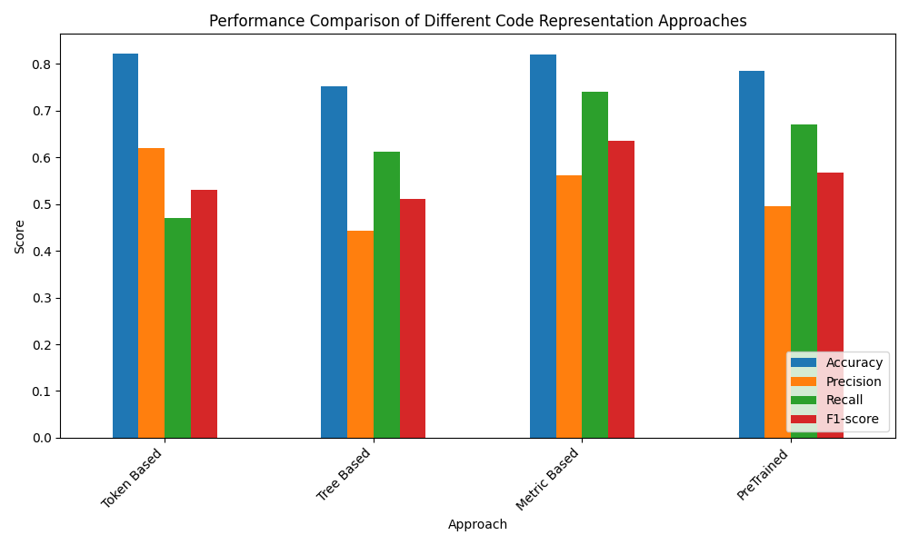

MLCQ God Class Gradient Boosting Evaluation Approaches
Comparison Table
| Approach |
Accuracy |
Precision |
Recall |
F1-score |
| Token Based |
0.8231 |
0.6190 |
0.4701 |
0.5309 |
| Tree Based |
0.7523 |
0.4432 |
0.6128 |
0.5111 |
| Metric Based |
0.8194 |
0.5609 |
0.7409 |
0.6347 |
| PreTrained |
0.7845 |
0.4961 |
0.6701 |
0.5674 |
Bar Plot

Evaluation Results
Gradient Boosting - Token Based
- Accuracy: 0.8231
- Precision: 0.6190
- Recall: 0.4701
- F1-score: 0.5309
Gradient Boosting - Tree Based
- Accuracy: 0.7523
- Precision: 0.4432
- Recall: 0.6128
- F1-score: 0.5111
Gradient Boosting - Metric Based
- Accuracy: 0.8194
- Precision: 0.5609
- Recall: 0.7409
- F1-score: 0.6347
Gradient Boosting - PreTrained
- Accuracy: 0.7845
- Precision: 0.4961
- Recall: 0.6701
- F1-score: 0.5674